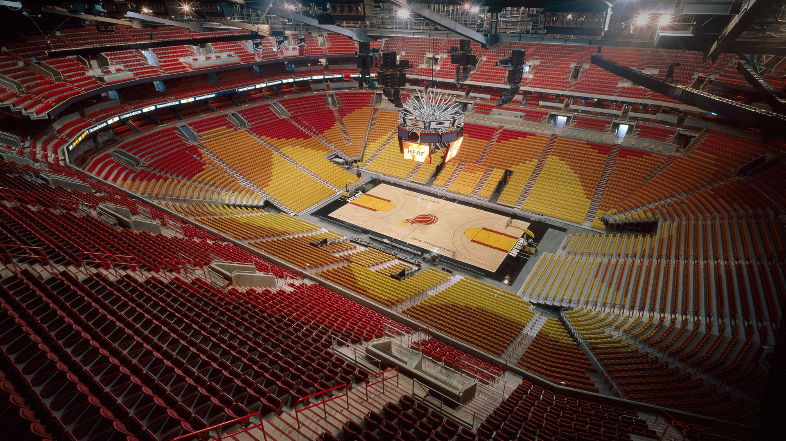

Hard Rock Stadium
Le Hard Rock Stadium (anciennement Dolphin(s) Stadium) est un stade de football américain et de baseball situé à Miami Gardens, dans la banlieue nord de Miami, en Floride.Depuis 1987, c'est le domicile des Dolphins de Miami, une équipe de football américain.
En 1993, une nouvelle franchise de la Ligue majeure de baseball est créée à Miami sous le nom de Marlins de la Floride et s'installe dans le Dolphin Stadium.
Il a une capacité de 65,326 places en configuration football américain et 38 560 en configuration baseball avec 240 suites de luxe et 10 175 sièges de club. Le stade est entouré d'un parking d'environ 25 000 places.
Dolphins de Miami
Les Dolphins de Miami (Miami Dolphins en anglais) sont une franchise de la National Football League (NFL) située à Miami. Depuis 1987, ils évoluent dans le Hard Rock Stadium. Avant cette date, les Dolphins jouaient au Miami Orange Bowl.Les Dolphins intègrent la NFL en 1970. L'équipe joue son premier Super Bowl en 1972. Ils s'inclinent face aux Cowboys de Dallas. L'année suivante, les Dolphins réalisent la saison parfaite gagnant tous leurs match de saison régulière, leurs matchs de playoffs mais surtout le Super Bowl VII. Les Dolphins sont les seuls à avoir réalisé cet exploit d'invincibilité. Ils remportent ensuite le Super Bowl VIII, devenant la première équipe à se qualifier pour trois Super Bowls consécutifs. Ils participent également par la suite aux Super Bowl XVII et XIX sans parvenir à les remporter.
La franchise dès ses débuts en NFL est entraîné par Don Shula. Il reste à ce poste pendant vingt-six saisons consécutives. Comme entraîneur, il est le recordman de victoires de l'histoire du football professionnel.

{kind=link}
{kind=link}
Palmarès
- Vainqueur du Super Bowl (2) : 1972 (VII) et 1973 (VIII)
- Champion de Conference (5) : 1971, 1972, 1973, 1982 et 1984
- Champion de Division AFC East (13) : 1971, 1972, 1973, 1974, 1979, 1981, 1983, 1984, 1985, 1992, 1994, 2000 et 2008
Marlins de Miami
Les Marlins de Miami (Miami Marlins en anglais) sont une équipe de baseball de la Ligue majeure de baseball située à Miami, Floride. Fondée en 1993 sous le nom Marlins de la Floride et rebaptisée en novembre 2011, cette franchise compte deux victoires en Séries mondiales (1997 et 2003).Giancarlo Cruz Michael Stanton est un joueur de champ extérieur des Yankees de New York de la Ligue majeure de baseball. Il joua pour les Marlins de Miami de 2010 à 2017. Il fut le meilleur joueur des Ligues majeures (depuis 1911).
Les Marlins jouent leur dernier match au Sun Life Stadium (=Hard Rock Stadium) le 28 septembre 2011, une défaite de 3-1 face aux Nationals de Washington.
Le 11 novembre 2011, les nouvelles couleurs et le nouveau logo de l'équipe sont dévoilés. La franchise est officiellement renommée Miami Marlins, une des conditions au financement public d'un nouveau stade de baseball. L'équipe inaugure son nouveau terrain, le Marlins Park, le 4 avril 2012.
Palmarès
- Championnat de Série mondiale (World Series) (2) : 1997, 2003
- Champion de la Ligue nationale (2) : 1997, 2003
- Meilleur deuxième (2) : 1997, 2003
{kind=link}
{kind=link}
- American Airlines Area 
- Shaquille'O'Neal
- "Big Three"
{kind=link}
Miami Heat
Le Heat de Miami (en anglais : Miami Heat) est une franchise de la National Basketball Association (NBA) basée à Miami en Floride.Malgré seulement trois décennies d'existence, le Heat dispose d'un des plus grands palmarès de la ligue avec six finales NBA et trois titres de champion (2006, 2012, 2013). Le Heat dispute ses matchs à domicile dans l'American Airlines Arena.
Le joueur emblématique de la franchise est Dwyane Wade, arrière, sélectionné lors de la draft 2003 de la NBA. Wade associé à Shaquille O’Neal, ont permis à la franchise de participer aux finales 2006, où ils ont remporté leur premier titre de champion.
En 2010, après avoir créé un espace salarial important, le Heat a associé Wade à LeBron James, et Chris Bosh, créant le "Big Three". Pendant leur période de quatre ans ensemble, ils ont mené le Heat en finales NBA chaque saison, et ont remporté deux titres consécutifs en 2012 et 2013.
La Heat détient le record de la troisième série de victoires la plus longue de la NBA, soit 27 matchs consécutifs, établi au cours de la saison 2012-2013. LeBron James a gagné 2 titres de Most Valuable Player (MVP) sous le maillot du Heat.
Palmarès
- Champion NBA (3) : 2006, 2012 et 2013
- Champion de la Conférence Est (6) : 2006, 2011, 2012, 2013, 2014 et 2020
- Champion de la Division Atlantique (4) : 1997, 1998, 1999 et 2000
- Champion de la Division Sud-Est (10) : 2005, 2006, 2007, 2011, 2012, 2013, 2014, 2016, 2018 et 2020
{kind=link}
{kind=link}
{kind=link}